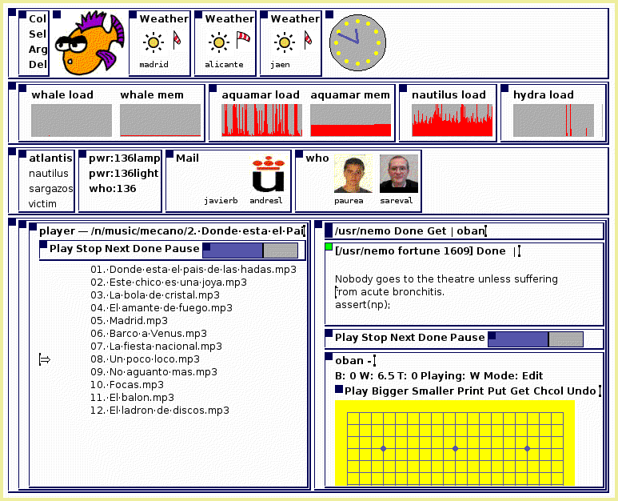

Plan B
Plan B 4th edition 
Put resources into boxes
Plan B is an operating system designed to work in distributed environments where the set of available resources is different at different points in time. Its 4th edition is implemented as a set of user programs to run on top of Plan 9 from Bell Labs.
It's main design guidelines are:
- All resources are perceived as volumes. A volume is a file tree exported to the network together with a name and constraints.
- The system operates on both local and remote boxes through the same protocol. Any implementor of such protocol can be used as part of a Plan B system.
- Each application has its own name space and can customize it. Customization is done by defining names for volumes and specifying the desired order and constraints to tailor automatic import of network volumes.
- Applications try to avoid connections to resources, by using calls that accept file names instead of file descriptors.
- Volumes can be advertised as they become available to be automatically bound to pre-specified names in the name spaces of applications that care about such resources.
The design owes much to Plan 9 and to Off++. For a description of the system, you may read some of the papers listed in the papers page.
This is a screenshot of the sytem

And you can see the code for an example application, the player we use to listen to music within our smart space shown in the screenshot. The player is similar to one implemented for a single machine, but Plan B makes it adapt to device availability and distribute its UI among available screens.
The manual for the system is included in the distribution.
Some demonstrations for the system are available in the LS main page.
The distribution is available with a set of files that can be unpacked on top of a Plan 9 installation to obtain a Plan B. The file /sys/src/README.PlanB reports the files changed in Plan B with respect to Plan 9.